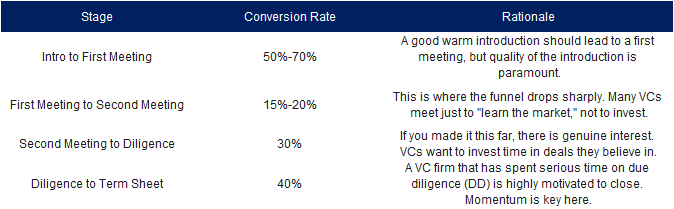
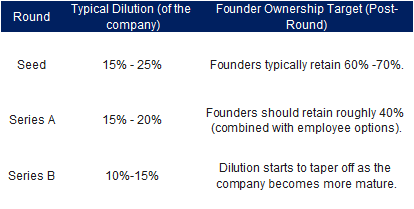

A Note from PocketVC Founder, Dan 💡
Another day, another dollar! Silly season is near approaching so make sure to have those terms sheets done and dusted so you can afford your Christmas turkey! We're continuing our journey into the building blocks of venture capital this week. We’ve covered the fundamental question of whether venture capital is right for your startup. If your answer was yes, this is the most critical post you will read all month.
Fundraising is a process, not a magical event. It is a sales motion governed by harsh data and long timelines. This guide gives you the insider benchmarks for the three things founders most commonly misunderstand: funnel conversion, time-to-close, and dilution.
I. The Brutal Funnel: Quantifying the Effort
Fundraising is a numbers game. To succeed, you must treat the process with the same rigour as your sales team treats a lead pipeline.
A. The Conversion Rate Reality
The journey from initial contact to securing a cheque is steep. Most founders severely underestimate the volume of outreach required to close just one deal.

Typical VC funnel conversion from 100 target investors down to a single signed term sheet.
The Mandate: You must aim to engage 100 target VCs at the top of the funnel to secure just one deal. Run the process in parallel, not in succession, to create the necessary competition.
How to Improve These Odds & Essential Questions to Ask
To boost your conversion rates and avoid spinning your wheels, follow these core pitching rules:
Seek Connections & Do Your Homework: I can't stress this enough! The amount of random requests I get on LinkedIn is beyond me. Go to the VC’s portfolio page and see if you fit the thesis. Make sure to pick the right partner who specialises in your field.
Attend Events: Attend events of the VCs you want to speak with (they can't run and hide).
Ask Essential Questions (The VC Filter): Use your initial call time to filter the VC, not the other way around. Ask these strategic questions to understand their mandate and process:
II. The VC Clock: Time and Runway Standards
The speed of fundraising is often measured in months, not weeks, and the market is trending slower. Founders must plan their runway accordingly.
A. The Reality of the Fundraising Timeline
Time to Close: If the stars align and everything goes smoothly, a Seed round takes a minimum of three months to close (money in the bank). Six to nine months is more typical.
Time Between Rounds: The median interval between a Seed round and a Series A is now over two years, a significant increase from prior years.
The Holiday Factor: Europeans are known for having a lot of time off in the summer and also during Christmas silly season. You must take that into consideration when thinking about runway and funding, as securing full partnership alignment during these blocks is very difficult.
B. The Absolute Runway Rule
Your runway should not be viewed as the time until you run out of cash, but the time you need to hit your next milestone plus the time needed to raise the next round.
Standard Rule: Always raise capital for an 18- to 24-month runway. This breaks down to 12-18 months for execution (hitting product milestones and gaining traction) and 6 months for fundraising.
The Critical Error: Start fundraising six months before you run out of cash. Any shorter, and you lose all negotiating leverage.
III. The Equity Reality: Standard Dilution
Dilution is a necessity of the VC process. You must know the standard benchmarks to ensure you are giving up a fair amount of equity and retaining enough control to keep going.
A. Standard Dilution Benchmarks
VCs look for a predictable percentage of ownership at each stage. Deviating too far from these norms can be a red flag for future investors.

Standard dilution expectations from Seed through Series C help you plan ownership targets.
B. The Cost of Loss of Control
Excessive dilution is the primary risk. By Series C, founders typically own less than 25% of the company. Dilution means a loss of voting power, which can impact your ability to control the company's direction.
IV. PocketVC's Opinion: Master the Process
Fundraising is a Sale: Treat it like the most important B2B sale of your life. Build a pipeline (Tier 1, 2, 3), track conversion rates, and constantly iterate your pitch based on feedback.
The Hardest No: The hardest pass will happen between the first and second meeting. Don't take it personally; learn from the feedback and adjust your narrative.
Time is Money: Protecting your runway is the only insurance against getting squeezed. Plan for 6 months of fundraising time, always. Master the process, and you master your destiny.